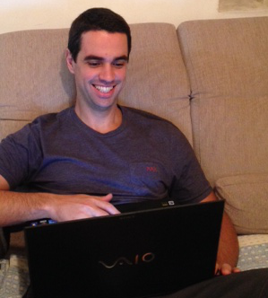

Bem Vindo
Eu sou Giulliano Morroni - Arquiteto de Software
Este website possui informações sobre minha vida profissional e pessoal . Sou Arquiteto de Software, especilista em tecnologias Java, novas tecnologias e ligado em tendências.
Perfil
Giulliano Morroni
Inicie minha experiência na área da tecnologia em 2003, nas antigas salas de CPD. Passei por cargos
como analista de suporte técnico, administrador de redes, administrador de servidores e finalmente decidi entrar
para área de desenvolvimento de software, a qual me apaixonei.
Sou uma pessoa sempre ligada em novas tecnologias, passo algumas noites lendo e aprendendo sobre diversos assuntos relacionados a softwares.
Atualmente tenho investido meu tempo em Big Data, estatística, processamento paralelo e arquiteturas orientadas a serviços.
- Principais Caracteríticas
- Bom Humor
- Eficiente
- Pragmático
- Inovador
- Comprometido
- Justo
Meu principal hobbie são projetos voltados a automoção, robótica e inteligência artificial.
Testimonials
Some Person 1
Some Company
bibendum at, posuere sit amet, nibh. Duis tincidunt lectus quis dui viverra vestibulum. Suspendisse dui. bibendum at, posuere sit amet, nibh. Duis tincidunt lectus quis dui viverra vestibulum. Suspendisse dui.
Some Person 2
Some Company
Sed elebibendum at, posuere sit amet, nibh. Duis tincidunt lectus quis dui viverra vestibulum. Suspendisse dui.ifend nonummy diam. Praesent mauris ante, elementum et, uis dui viverra vestibulum. Suspendisse dui.
Some Person 3
Some Company
Sed eleifend nonumm pbibendum at, posuere sit amet, nibh. Duis tincidunt lectus quis dui viverra vestibulum. Suspendisse dui.osuere sit amet, nibh. Duis tincidunt lectus quis dui viverra vestibulum. Suspendisse dui.
Some Person 4
Some Company
Sed eleifend nonummy diam. Praesent mauris ante, elementum et, bibendum at, posuere sit amet, nibh. Duis tincidunt lectus quis dui viverra vestibulum. Suspenbibendum at, posuere sit amet, nibh. Duis tincidunt lectus quis dui viverra vestibulum. Suspendisse dui.disse dui.
- Idade
31
- Localidade
São Paulo - BR
- Email
giullianomorroni@gmail.com
- Telefone
11 99943 xxxx
- Meu Sonho
Ver robôs na rua
Carreira Profissional
Minha experiência na área de tecnologia iniciou-se em 2002, resultando em mais de 10 anos de conhecimento. Embora meu foco hoje em dia seja desenvolvimento de softwares, nesses anos todos passsei por cargos e responsabilidades distintas.
Estudos
Cursos Técnicos
Sou uma pessoa autodidata, mas também gosto de participar de cursos presenciais, para trocar experiências e conhecer outras do ramo.
Formação Acadêmcia
Habilidades e Conhecimentos
Principais Conhecimentos
O que penso sobre...
Arquitetura de Software
Quando comecei a trabalhar com Java, minha meta profissional era tornar-se um arquiteto de software.
Embora a maioria das linguagens de programação não reconheçam essa profissão, Java por ser uma
plataforma extensa, se torna um caso à parte. Com muitos anos de estudo no passado e com certeza no futuro,
hoje sou certificado Oracle Master - Java Architect e tenho orgulho de todo o esforço e tempo investido,
me considero um arquiteto exímio, criativo e inovador
Liderança
Poucas vezes trabalhei com líderes de verdade, na maioria dos casos eu tive "chefes", pessoas que
insistem em seguir a antiga escola da administração onde um pensa o resto executa.
Durante minha carreira tive a oportunidade de liderar duas equipes. Então apostei no potencial de todas
as cabeças pensando e executando, como sugere a Gestão de Projetos 3.0 e o Scrum, obtive não só o
respeito de todos como também mantive a equipe motivada e comprometida com o projeto.
Troubleshooting
Eu costumo dizer que "todo sistema por definição é um bug com algumas poucas funcionalidades úteis",
brincadeiras a parte, quem já precisou manter um sistema legado rodando, sabe que problemas aparecem
aos montes. Seja ele um sistema de missão crítica ou um sistema que impacte diretamente no faturamente da empresa.
Para casos assim eu costumo trabalhar com uma filosifia chamada de Melhoria Contínua, obtive excelentes
resultados e sou adepto afinco dessa ideia no contexto de softwares.
Tags
- NoSQL
- Scrum
- JEE
- Spring
- BigData
- Jboss AS
- Hibernate
- Kanban
- SOA
Projetos Pessoais
Abaixo alguns projetos que desenvolvi, às vezes pelo simples fato de querer estudar sobre o assunto, indo até projetos profissionais com altas possiblidades de lucro
-

Arduino Awkwards
Espaço voltado a assuntos sobre robotica. Compartilhar conhecimento é preciso -
Casa Comigo
Portal completo para pessoas que buscam excelência quando o assunto é casamento (estamos em desenvolvimento) -
Business Intelligence
Implementação em Java de uma base de dados tipo OLAP. O esquema utilizado foi o "star schema" e a base é um MySQL -
Inteligencia Artificial
Estudo, aplicações e algoritmos sobre o mundo da Inteligência Artificial -
JaxRsCache
Biblioteca de armazenamento e recuperação de dados em cache integrada com Jersey, que proporciona acesso a dados com excelente performance.


{kind=link}
{kind=link}